选择种族
简介 ❯
人类作为大陆上数量最多的种族，他们的辉煌时期远在精灵、矮人等古老的种族之后，人类并不像先前的种族那般具有某方面极为突出的优势。
用“均衡发展”来形容人类再合适不过了，他们勤劳好学、团结共勉、博采众长。
在漫长的岁月里，人类不断向其它种族学习，在这个过程中不断成长。 时过境迁，在诸多的征战后，各个大陆的人类团结聚集在了一起，创建了属于自己的帝国以及辉煌文明。曾今弱小的他们如今已经成为各个大陆最重要的势力之一。
在漫长的岁月里，人类不断向其它种族学习，在这个过程中不断成长。 时过境迁，在诸多的征战后，各个大陆的人类团结聚集在了一起，创建了属于自己的帝国以及辉煌文明。曾今弱小的他们如今已经成为各个大陆最重要的势力之一。
特长 ❯
外交：交涉骰值＋2、察言观色骰值＋2
额外专长：1级时额外获得1个专长点
多才多艺：每次升级时获得1点额外本职能力点
额外专长：1级时额外获得1个专长点
多才多艺：每次升级时获得1点额外本职能力点
基本属性 ❯
年龄：16–26岁
身高：1.6–1.9m（男性）
1.5–1.8m（女性）
体重：60–90kg（男性）
40–75kg（女性）
体型：中型
速度：9m/回合
初始语言：通用语
擅长武器：常见武器
可选职业：所有初始职业
六维属性调整：自由分配2点
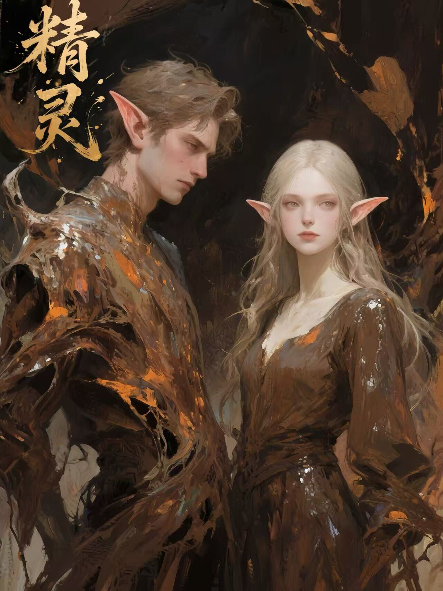
简介 ❯
精灵是一群优雅而神秘的种族，通常生活在美丽而隐秘的森林中，以弓箭与魔法为主要武器。
精灵具有卓越的智慧和长寿的特点，他们的身体优雅纤细，肤色苍白，头发通常是金色或银色。
古老的长生种注定了精灵们博学而又擅长魔法但外表冷酷的精灵内心也很冰冷，见证了人类一代又一代的消亡时精灵们藏身于密林之间沐浴着月光，与世无争。
精灵具有卓越的智慧和长寿的特点，他们的身体优雅纤细，肤色苍白，头发通常是金色或银色。
古老的长生种注定了精灵们博学而又擅长魔法但外表冷酷的精灵内心也很冰冷，见证了人类一代又一代的消亡时精灵们藏身于密林之间沐浴着月光，与世无争。
特长 ❯
微光视觉：精灵在微光环境下可以保持良好视力
精灵抵抗：精灵在对抗魔法造成控制类效果时豁兔+2
消磨时间：精灵族可以选择一个除通用语和精灵语以外的初始基本语言
魔力亲和：精灵获得法术穿透+2
敏锐直觉：精灵在侦察时获得+2种族加值
不老生命：精灵在升级时额外+1最大生命值
精灵抵抗：精灵在对抗魔法造成控制类效果时豁兔+2
消磨时间：精灵族可以选择一个除通用语和精灵语以外的初始基本语言
魔力亲和：精灵获得法术穿透+2
敏锐直觉：精灵在侦察时获得+2种族加值
不老生命：精灵在升级时额外+1最大生命值
基本属性 ❯
年龄：100–140岁
身高：1.9–2.2m（男性）
1.8–2.1m（女性）
体重：50–80kg（男性）
45–75kg（女性）
体型：中型
速度：9m/回合
初始语言：通用语、精灵语
擅长武器：剑、弓、匕首
可选职业：吟游诗人、牧师、德鲁伊、战士、圣骑士、游侠、法师
六维属性调整：
敏捷 +2，智力 +2，魅力 +2
力量 −2，体质 −2
简介 ❯
矮人是一个上古长生种族，有人认为他们性格直爽、豪迈热情。也有人认为他们盲目自私又小气。
上古时期神明创造了这个种族隐匿于群山。他们也曾经辉煌，锻造娴熟的工匠在锻造师山脉打造了一个又一个传世的神器象征着矮人之王的权力。统治从锻造师山脉以东的铁丘陵直到圣盔谷的矮人王国……
而如今提起矮人总会联想到酒馆里的醉汉，但短命种族人类不知道的是，那些浑身酒气，浓密的大胡子和敦实的外表下藏匿着坚如磐石的内心以及对兽人与龙的仇恨。
上古时期神明创造了这个种族隐匿于群山。他们也曾经辉煌，锻造娴熟的工匠在锻造师山脉打造了一个又一个传世的神器象征着矮人之王的权力。统治从锻造师山脉以东的铁丘陵直到圣盔谷的矮人王国……
而如今提起矮人总会联想到酒馆里的醉汉，但短命种族人类不知道的是，那些浑身酒气，浓密的大胡子和敦实的外表下藏匿着坚如磐石的内心以及对兽人与龙的仇恨。
特长 ❯
黑暗视觉：常年在山体内生活的矮人拥有良好的夜视能力
毒素抗性：良好的体质使矮人获得+2毒素抗性
坚如磐石：矮人身体宽厚重心较低，对抗冲撞摔绊时豁免+1
岩石皮肤：常年在群山生活磨练出岩石一般的皮肤，天生获得+2物理抗性
能工巧匠：矮人天生可以在石匠、锻造、酿酒中选择一项技能骰值+2
毒素抗性：良好的体质使矮人获得+2毒素抗性
坚如磐石：矮人身体宽厚重心较低，对抗冲撞摔绊时豁免+1
岩石皮肤：常年在群山生活磨练出岩石一般的皮肤，天生获得+2物理抗性
能工巧匠：矮人天生可以在石匠、锻造、酿酒中选择一项技能骰值+2
基本属性 ❯
年龄：40–50岁
身高：1.4–1.6m（男性）
1.35–1.55m（女性）
体重：70–100kg（男性）
60–90kg（女性）
体型：中型
速度：6m/回合
初始语言：通用语、矮人语
擅长武器：锤、斧、弩
可选职业：战士、牧师、野蛮人、术士、圣骑士、吟游诗人
六维属性调整：
体质+2，感知+2，魅力-2
简介 ❯
侏儒的历史可以追溯到猩红时代，这时候侏儒作为一个突然在大陆上人口增多的种族他们曾经饱受歧视。
古代学者认为这些小个子是猩红时代的邪恶术士们为了培养自己的血脉时而产生的人类变异疾病。而这些聪明伶俐的小个子们逐渐找到了自己的特长。
他们是智慧的结晶，他们学识渊博、手不释卷，在烛光前专心致志的阅读是侏儒们辛苦劳作后最好的消遣。 勤奋好学的侏儒们掌握了精湛的手工技艺，同时他们也是敏捷的战士和睿智的学者，在预言和贤能之士的引领下，年轻一代的侏儒们已经整装待发。
他们是智慧的结晶，他们学识渊博、手不释卷，在烛光前专心致志的阅读是侏儒们辛苦劳作后最好的消遣。 勤奋好学的侏儒们掌握了精湛的手工技艺，同时他们也是敏捷的战士和睿智的学者，在预言和贤能之士的引领下，年轻一代的侏儒们已经整装待发。
特长 ❯
迅捷灵敏：闪避天生获得+1加值
心灵手巧：进行手艺判定时，骰值获得+2加值
黑暗视觉：侏儒拥有良好的夜视能力
魔法抵抗：魔法防御天生获得＋2加值
心灵手巧：进行手艺判定时，骰值获得+2加值
黑暗视觉：侏儒拥有良好的夜视能力
魔法抵抗：魔法防御天生获得＋2加值
基本属性 ❯
年龄：30–40岁
身高：0.7–1.1m（男性）
0.6–1.0m（女性）
体重：20–40kg（男性）
15–35kg（女性）
体型：小型
速度：6m/回合
初始语言：通用语、侏儒语
擅长武器：匕首、单手剑、轻弩
可选职业：战士、牧师、德鲁伊、盗贼、法师、术士、吟游诗人
六维属性调整：
智力+2，魅力+2，力量-2
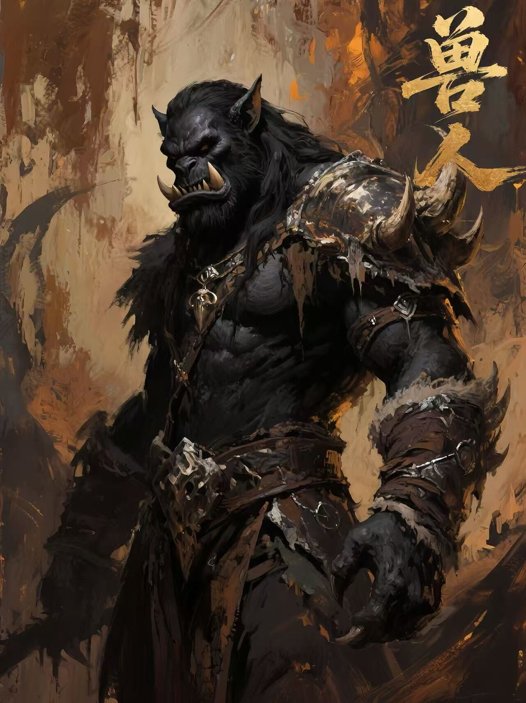
简介 ❯
兽人是一群强壮而野蛮的种族，他们通常生活在荒凉的土地上，喜欢战斗和征服。兽人拥有强大的气魄和勇气，也许是因为智力低下，兽人对于死亡和恐惧的概念非常淡薄，但这也可能是一种兽人独有的生活哲学。
对于他们来说，破坏与毁灭才是生命的意义，担心死亡或者因死亡而产生恐惧是十分的愚蠢。他们普遍是身材魁梧的绿皮怪物，其中也不乏魔法以及哲学等领域的佼佼者，通常兽人的社会等级森严，同部族兽人直接存在着血脉阶级压制。
对于他们来说，破坏与毁灭才是生命的意义，担心死亡或者因死亡而产生恐惧是十分的愚蠢。他们普遍是身材魁梧的绿皮怪物，其中也不乏魔法以及哲学等领域的佼佼者，通常兽人的社会等级森严，同部族兽人直接存在着血脉阶级压制。
特长 ❯
统治阶级：酋长＞长老＞统领>勇士，低级兽人面对高级兽人时内心充满血脉压制带来的恐惧
兽人之怒：兽人生命值降到濒死时，能继续战斗一回合，在下回合结束时，生命值处于0或0以下，立即进行一次死亡判定，“兽人之怒”持续时间内，每日一次
钢筋铁骨：物理防御和魔法防御天生获得+2加值
黑暗视觉：兽人拥有良好的夜视能力
生存本能：野外生存骰值+2加值
强壮身躯：初始生命＋1、疾病抵抗+1
易怒：受到挑衅对抗-2
兽人之怒：兽人生命值降到濒死时，能继续战斗一回合，在下回合结束时，生命值处于0或0以下，立即进行一次死亡判定，“兽人之怒”持续时间内，每日一次
钢筋铁骨：物理防御和魔法防御天生获得+2加值
黑暗视觉：兽人拥有良好的夜视能力
生存本能：野外生存骰值+2加值
强壮身躯：初始生命＋1、疾病抵抗+1
易怒：受到挑衅对抗-2
基本属性 ❯
年龄：12–16岁
身高：1.8–2.2m（男性）
1.75–2.1m（女性）
体重：90–180kg（男性）
80–150kg（女性）
体型：中型
速度：9m/回合
初始语言：通用语、兽人语
擅长武器：刀、斧、锤
可选职业：战士、野蛮人、武僧、术士、吟游诗人
六维属性调整：
力量+2，体质+2，智力-2
简介 ❯
赫利凡的外表证明了他们来自炼狱的血脉。他们有着巨大的角；粗大，无法卷曲的长达4到5英尺的尾巴；尖利的牙齿；如同黑色，红色，或者金色的眼珠。
他们的肤色包涵了所有人类的肤色，并且包括从浅红到砖红等各种红色。从他们的角后铺下的头发通常是暗蓝，红色或者紫色。
赫利凡偏爱暗色和红色，皮衣和光洁的毛皮，小尖刺和扣环。赫利凡打造的武器和护甲往往有带有古代风格，追溯他们早已消失帝国的荣光。
他们的肤色包涵了所有人类的肤色，并且包括从浅红到砖红等各种红色。从他们的角后铺下的头发通常是暗蓝，红色或者紫色。
赫利凡偏爱暗色和红色，皮衣和光洁的毛皮，小尖刺和扣环。赫利凡打造的武器和护甲往往有带有古代风格，追溯他们早已消失帝国的荣光。
特长 ❯
黑暗视觉：赫利凡拥有良好的夜视能力
魅魔本性：魅惑骰值+2
炎狱抗性：赫利凡拥有1/2等级的火焰抗性
黑夜杀手：隐匿类骰值+2
炼狱之力：赫利凡的魔法攻击或施法可以用魅力调整值替代智力计算伤害
炼狱馈赠：主动释放后施法速度+1，每日1次
魅魔本性：魅惑骰值+2
炎狱抗性：赫利凡拥有1/2等级的火焰抗性
黑夜杀手：隐匿类骰值+2
炼狱之力：赫利凡的魔法攻击或施法可以用魅力调整值替代智力计算伤害
炼狱馈赠：主动释放后施法速度+1，每日1次
基本属性 ❯
年龄：12–26岁
身高：1.6–1.9m（男性）
1.5–1.8m（女性）
体重：60–90kg（男性）
40–75kg（女性）
体型：中型
速度：9m/回合
初始语言：通用语、炼狱语
擅长武器：匕首、单手剑、轻弩、短弓、魔杖、法杖
可选职业：战士、野蛮人、游侠、盗贼、术士、法师、吟游诗人、牧师（烈火、山丘、风暴、保护、知识、工匠）
六维属性调整：
魅力+2，感知+2，体质-2
选择职业
选择血统
夏兰血统（原住民）
- 夏兰人是伯恩菲尔的土著居民，相对原始的社会文明令每一个夏兰人都必须拥有过硬的生存能力和生活技巧，时过境迁，虽大部分夏兰人进入了文明世界，仍然有少部分原住民部落仍然生活在森林和山丘之间。
- 夏兰血统的人类可以在耕作、畜牧、钓鱼、剥皮、纺织、木工、烹饪中选择一项获得骰值+2。
- 夏兰血统的人类额外获得一点属性点自由分配。
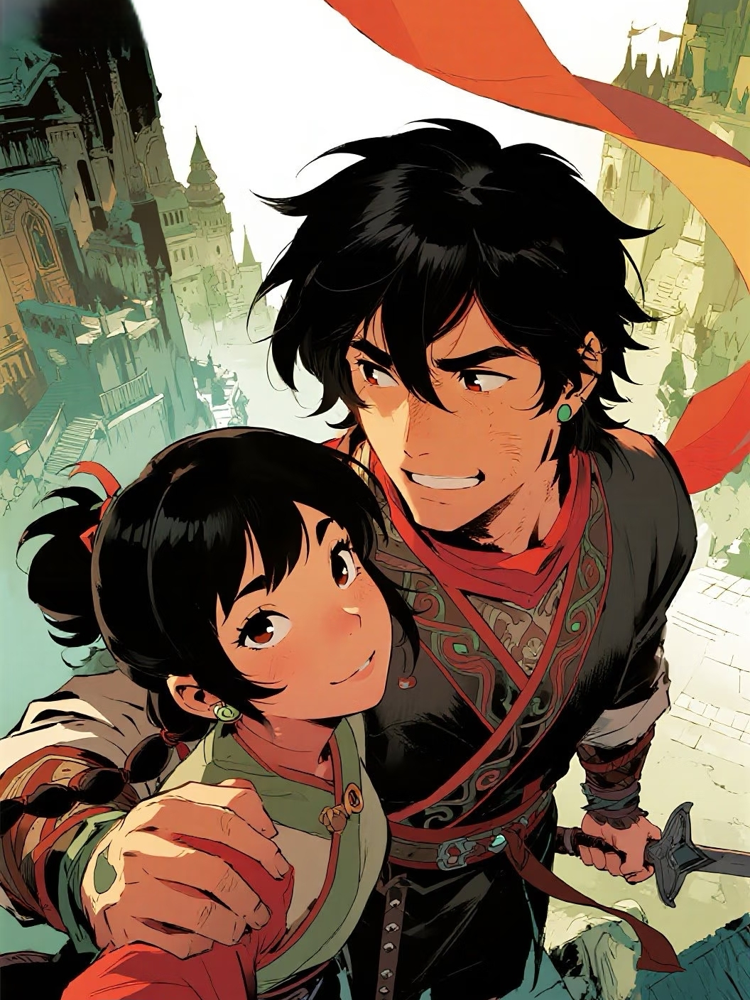
乾坤血统
- 地大物博、物产丰饶，生活在东方的人们向善、乐群、好学，他们生活的土地向往平衡与自然，东方大陆的人类勤奋刻苦、诚实谦逊，将仁、义、礼、智、信作为崇高的道德追求。
- 乾坤血统的人类休息6小时可以恢复法术环位，长寿，年龄上限增加10
- 乾坤血统的人类可以在魅力/感知/智力中选择一项属性+1
韦斯特血统
- 他们的祖先曾经来自于幽暗潮湿的一块不知名大陆，在那里被一群不可名状的怪物所统治。人类是那里最低贱的口粮和玩物。这也练就了他们一身隐匿、躲藏的本领和忍受残酷环境的能力。
- 韦斯特血统的人类可以在在已选择有的隐匿类本职能力中可以选择一项，在进行该本职能力操作时获得1d4加值
- 韦斯特血统可以在敏捷/智力中选择一项属性+1
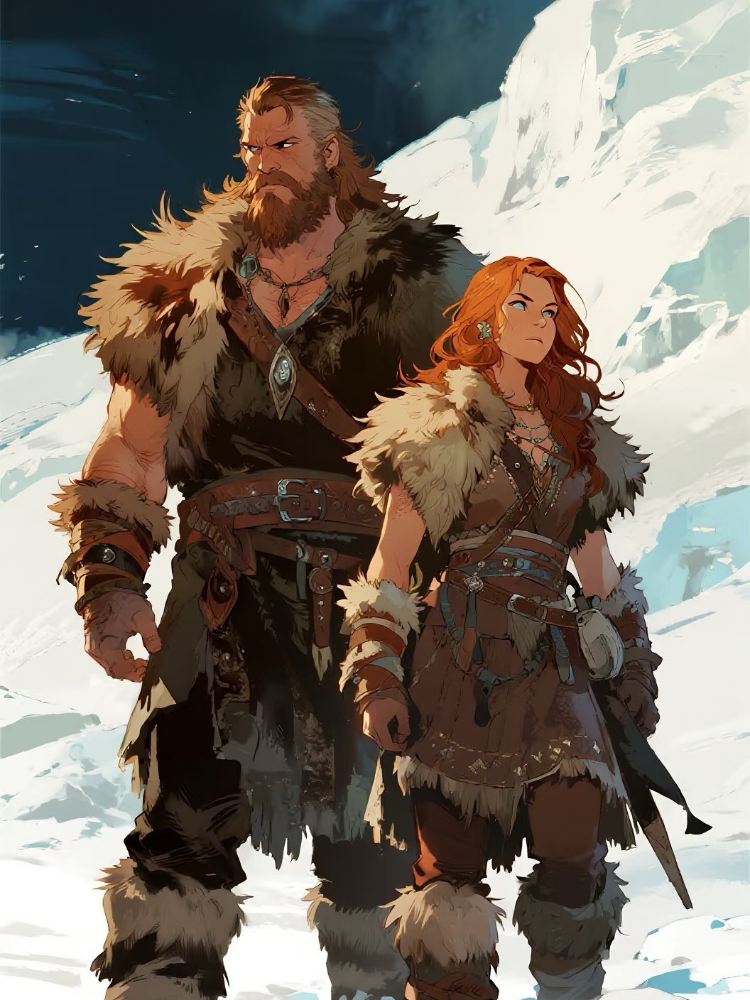
诺斯血统
- 北方是围绕在一块巨大峡湾的破碎群岛，气候严寒、土壤贫瘠，北方的居民能征善战、英勇无畏，常常被其它人类认为是一群蛮夷。诺斯人认为 “你守不住的东西证明你没有资格拥有它”。
- 诺斯血统的人类可以在在已选择有的运动类本职能力中可以选择一项，在进行该本职能力操作时获得1d4加值
- 诺斯血统的人类可以在力量/体质中选择一项属性+1
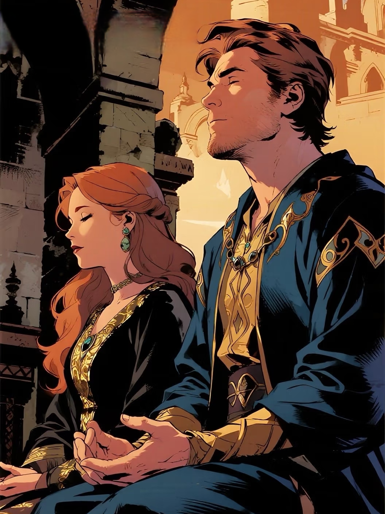
艾诺梵吉血统
- 南方大陆气候湿热、植被茂密，南方的居民自幼生活在宗教活动频繁的环境中，他们狂热的信仰神灵并且重视个人精神的苦修。
- 艾诺梵吉血统的人在休息12小时后可以在新的一天钟获得冥想状态，获得1点施法速度加值，并可以获得已有知识类判定骰值+1
- 艾诺梵吉血统的人可以在智力/感知中选择一项属性+1
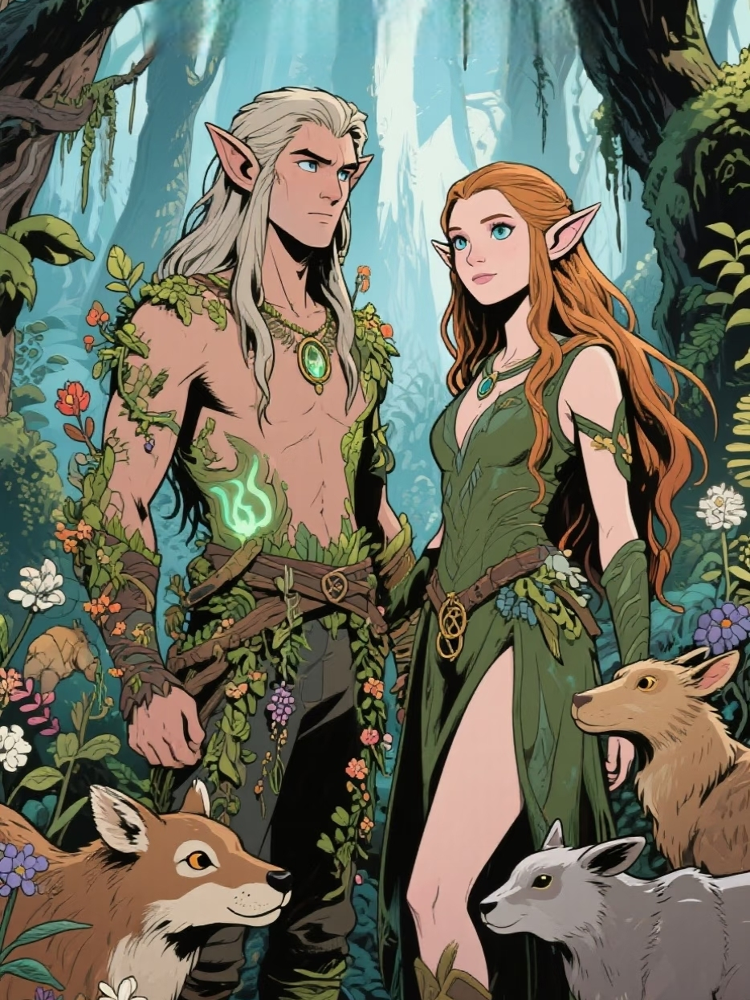
自然精灵
- 拥有自然精灵血统的多是精灵中勤勉好学的佼佼者，虽然没有受到神的恩惠，但对知识的渴求使得他们的祖先不断探索魔法与未知，在这个过程中他们得到了王族成员的赏识，逐渐成为了精灵社会的中坚力量。他们多为施法者。
- 自然精灵们获得远程施法施法距离分别增加1.5米
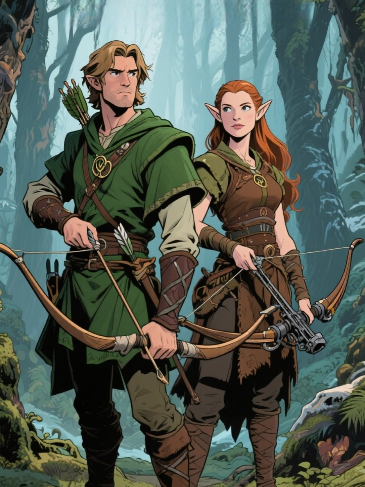
林间精灵
- 大部分林间精灵不受王族繁文缛节的约束，普遍向往自由的生活。他们的祖先很早便脱离了精灵社群，一开始这些居无定所的精灵四处流浪，他们像人类一样探索着这片大陆但却不想将任何土地占为己有。后来因为人类帝国的扩张 ，各地战乱不断，才致使这些流浪者隐入深林。
- 林间精灵们获得闪避+1，德鲁伊变身野兽也可以享受该加值
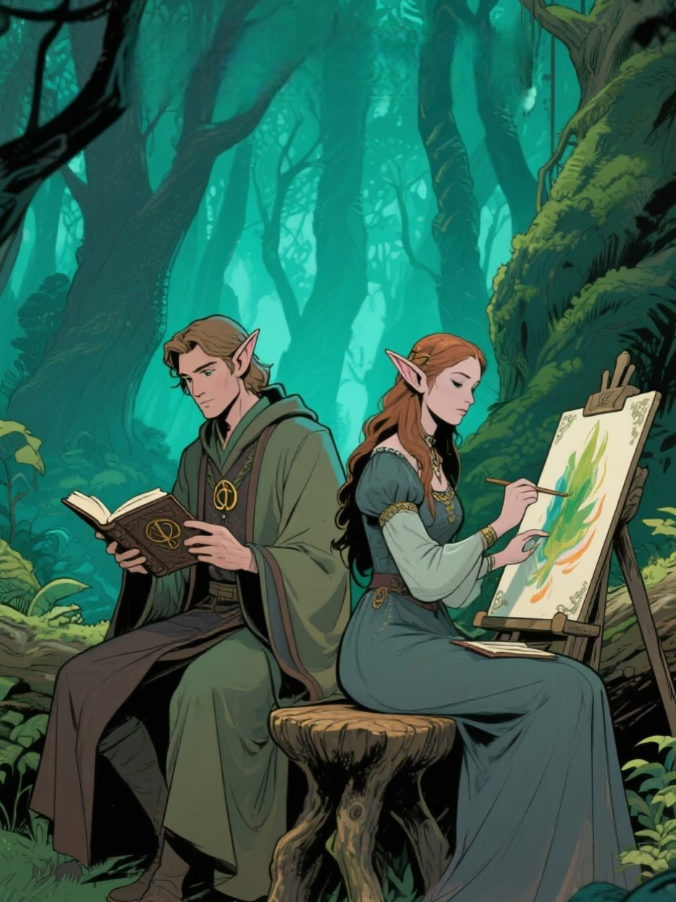
平民精灵
- 精灵社会中的基本单位，因为在精灵的社会中不存在严明的阶级制度且生命岁月漫长，这些平民通常会在闲暇时间学习很多技艺。
- 平民精灵可以在珠宝/陶艺/花艺/绘画/写作中选择一项作为初始本职能力。
- 平民精灵在阅读书籍时所耗费的时间是同智力其他种族的80%
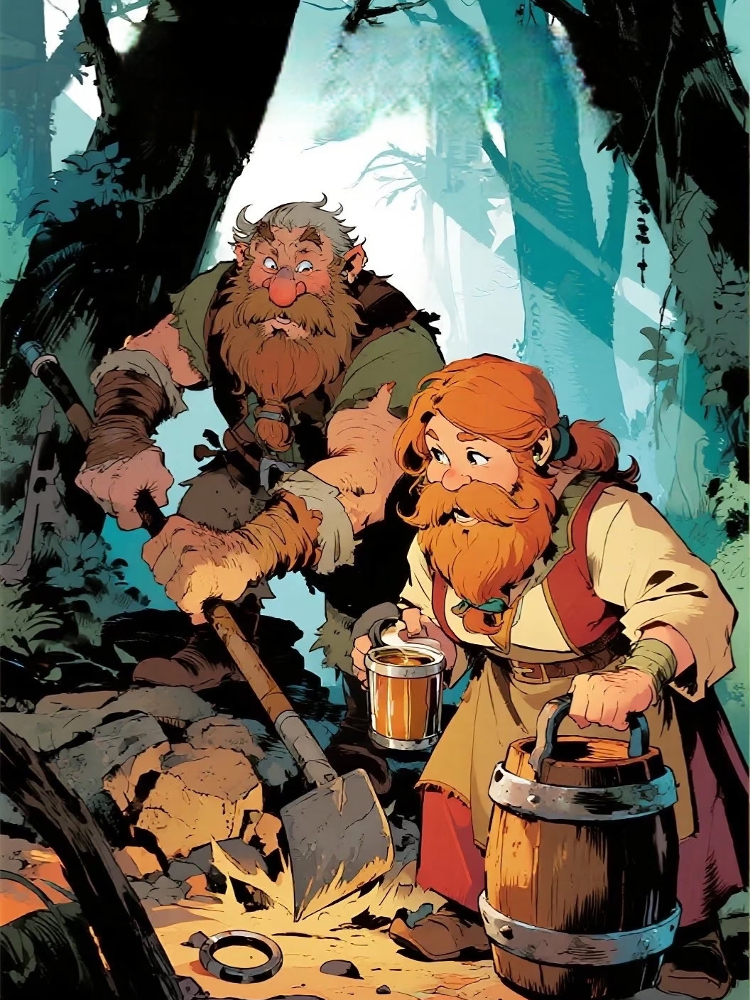
欢乐酒桶
- 他们亲近于人类，毕竟人类作为除了群山以外和矮人关系最要好的种族曾经给过自己很多帮助。热情似火的矮人他们可能是出色的酿酒师、矿工和宝石商人。 每天的生活虽然单一但并不枯燥，找一家酒馆点几桶最喜欢的麦酒和朋友们欢快的歌唱使他们最喜欢的事情。或者偶尔会因为争吵谁的胡子更美丽而大打出手。
- 欢乐酒桶的矮人们可以在，矿石/估价/酿酒/讨价还价中选择一个作为初始本职能力。
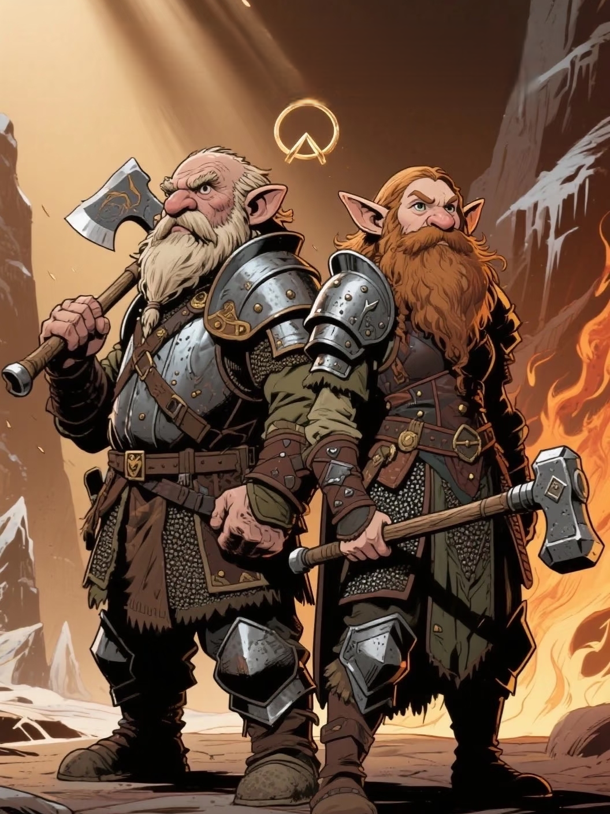
群山守卫
- 这是矮人军事力量的中流砥柱，他们从小生活在群山之中，每一个矮人守卫者幼年时都会知道，除了山丘与岩石还有熔炉中的武器意外，我们不能信任任何人。他们更擅长使用钝器战斗，嫉恶如仇的他们会用宽厚的身躯打碎那些侵犯自己领地的敌人。
- 群山守卫的矮人在使用斧或锤时获得额外命中+1
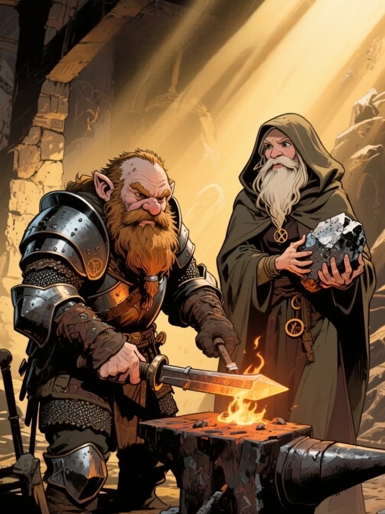
锻造师
- 作为一个人口不多的种族，历史上出色而又广为人知的锻造师中将近一半都是矮人。或许有这么一群矮人天生就对锻造和工匠有着莫名的亲和。守卫者手中的一柄又一柄锤斧，正是出自于这些精益求精的锻造师们。
- 锻造师矮人可以在锻造知识/石匠知识选择一个作为初始知识，并且锻造/石匠的骰值+2。
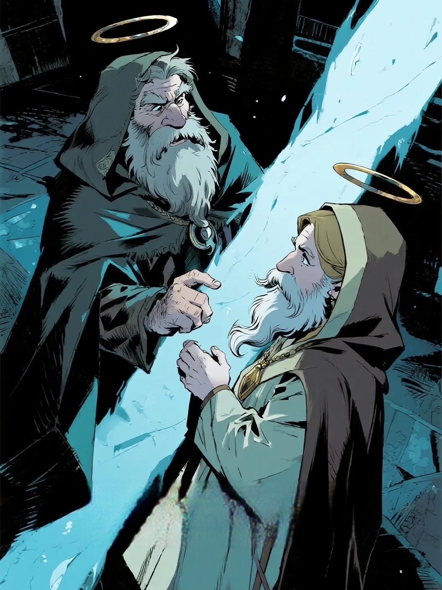
神职者
- 神职者们，是受到了神明的感召，他们拥有者强大的感知能力，长大后经常担任氏族中的牧师。大部分的矮人神职者在青年阶段都会经历过来自神明的感召。可能是在向希尔朝圣时墙壁上松动了一块石头，或者梦到神明夸赞自己精美的胡须。不管怎样，神职者们既然选择了信仰，他们就会鉴定的侍奉自己的神明，遵循自己的内心维护神圣而又不可侵犯的教义。
- 神职者矮人的神赐力量使用次数+1，使用神术时的施法专注和施法打断加值+2

荣耀氏族
- 万丘纪元时的氏族牢牢刻印在了矮人的石板上，在矮人的社会中，氏族象征着担负着更多的责任和更出色的能力。随着历史的演变，矮人的氏族也逐渐变得更多更零散，甚至是会出现几个只有兄弟两人的小氏族，但无论氏族有多少人，必须按照矮人最古老的传统，将族人用古矮人铭文刻印在自己氏族的石板上，每个氏族的族长都要像国王一样对自己族人负责。
- 任意一个荣耀氏族的矮人，当矮人数量增多时都会提升士气，在2/3/4/5名矮人时，矮人们都会获得1/2/3/4的意志豁免加值
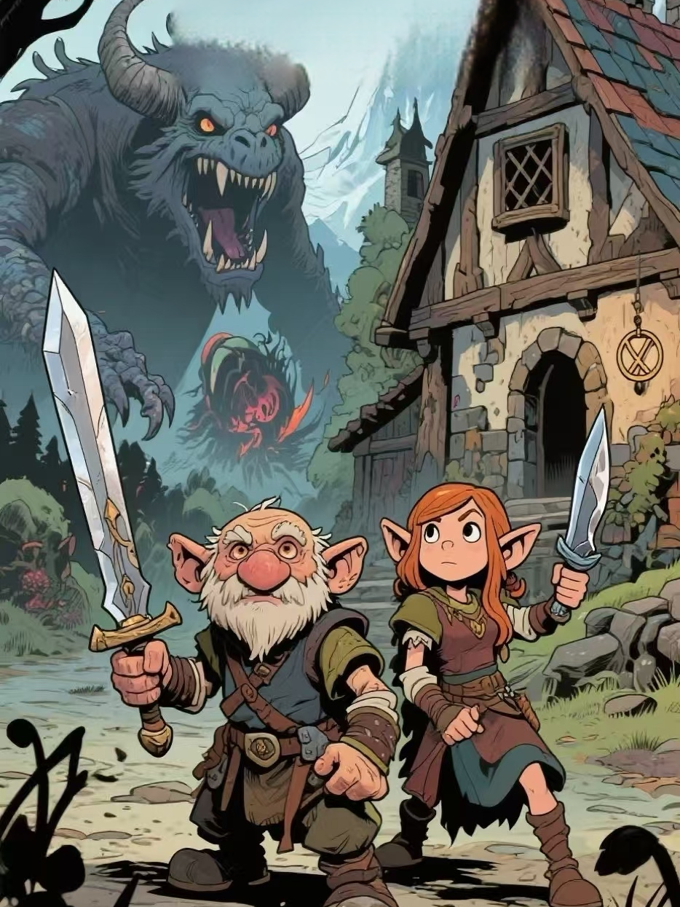
格雷罗
- 格雷罗是侏儒社会的中坚力量，他们往往会负责氏族的军事行动和社会治安。
- 格雷罗在面对中型生物攻击时，闪避+1。面对大型及巨星生物时闪避+2
贤者
- 贤者侏儒是侏儒社会结构中最重要的部分，他们勤于学习，善于思考。与人沟通时心态平和的同时还满载哲理。每当你有困惑和不解的问题时都可以去寻找一个贤者侏儒，他很有兴趣和你讨论人生，并和你分享一些自己独到的见解，但矮人除外。
- 贤者侏儒的谈判骰值+2，可以选择一项已有的知识骰值+1d4
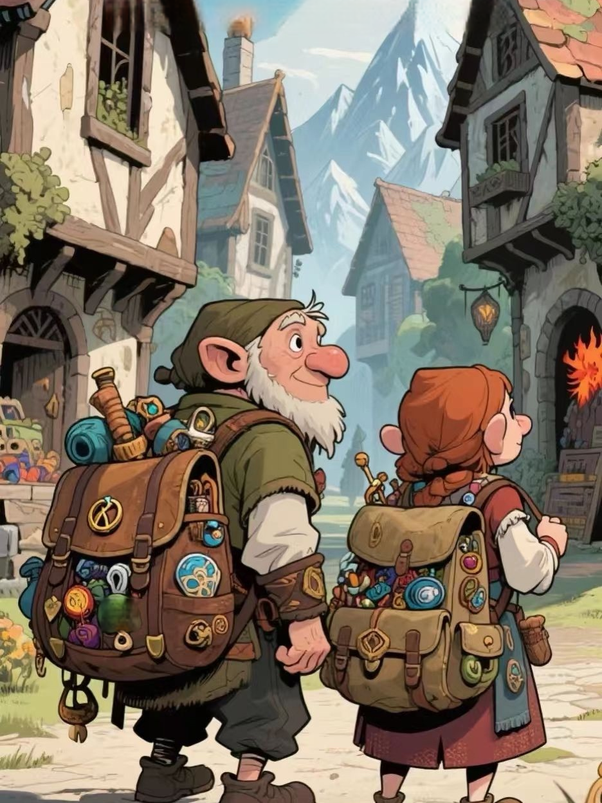
游商
- 在与人类的交融中，游商侏儒们拥有者对数字的敏感和对金钱的敏感，这些侏儒们早已没有的以往的群居生活和氏族观念，他们体型虽小，但拥有者灵敏的商业头脑。能言善辩，精于计算的他们会让每一笔生意利润最大化。你可以相信精灵，人类甚至是地精，但你最好别相信一个游商侏儒和他的产品。
- 游商侏儒的哄骗+2，可以选择一项已有的交涉类骰值+1d4
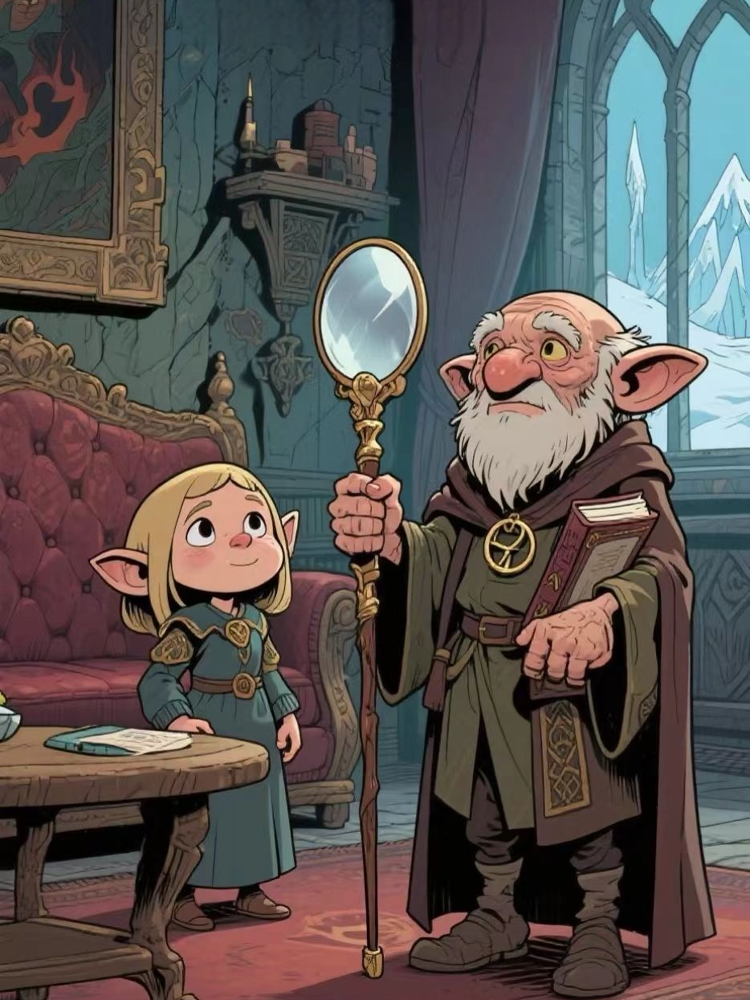
先知
- 自称为先知的侏儒们在研究神明和魔法时似乎受到了某种启示，他们不在依附于人类，而是聚集在一起，将门窗关好，每天坐在自己的床上念诵着虔诚的祷言，但滑稽的是没有一个侏儒能成为神职者在神殿中侍奉某位神明，但他们依然还觉得一定是神明赐予自己的预知未来的能力和魔法亲和。很多人类的城镇已经明确的将这些侏儒占卜师们划分为了神棍惩罚，但依然有人认为这些侏儒真的可以预知未来的危险。你看我连一块石头都抬不起来，又有什么理由害人呢？一位侏儒先知曾这样说道。
- 侏儒先知可以获得施法速度+1
选择阵营
守序善良
大陆上的道德标杆，永远做着被认为是正确的事情。他们只说实话、信守承诺、严于律己。他们面对邪恶的人往往毅然决然的挺身而出，不惜以牺牲自己为代价捍卫这片土壤和他人
中立善良
不会被刻板的规则影响，但是他们自身愿意尽全力帮助他人，满足他人需求
混乱善良
我行我素、热爱自由。会做出一些自认为是善良的事情。时而不考虑他人意愿，时而手段欠缺思考。但不影响他们有着一颗热情似火的心
守序中立
他们遵循法律，传统或个人准则而行动，做事方式不逾矩的同时也不会深度研究其遵循的秩序是否正确
绝对中立
他们向往独立、自由的生活。随心所欲的同时也不会给他人带来麻烦。他们不过问任何道德倾向，也不偏倚任何群体，而只是应时而动
混乱中立
他们自私自利，是坚定而又精致的利己主义者。遇见问题时总是见风使舵，确保自己的利益最大化